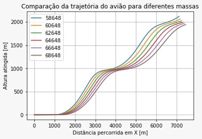

A Decolagem de um Avião - 1° Semestre (2017.1)
Modelagem e Simulação do Mundo Físico - Professor Fábio H.
Proposta:
O foco do último projeto desta matéria foi a modelagem de sistemas mecânicos – “mecânicos” no sentido comumente utilizado na física, ou seja, o estudo do movimento de corpos macroscópicos. Mais uma vez, o modelo seria utilizado para algum tipo de análise (ou seja, responder a uma pergunta explicativa, preditiva ou de parametrização do sistema escolhido). Ao final, seria realizada uma apresentação em slides ou em cartaz.
Objetivos:
O avião é um dos meios de transporte mais utilizados nos dias de hoje, principalmente para o deslocamento de pessoas e de carga, com rapidez. Nesse projeto, buscamos entender qual a influência da massa total de um Boeing 737 em sua decolagem, simulando-a em várias condições, partindo do vazio ao sobrepeso.
Conteúdo trabalhado:
- 2° Lei de Newton
- Arrasto Aerodinâmico
- Diagrama de Corpo Livre → Somas Vetoriais
- Cálculo Diferencial → equações diferenciais de segunda ordem
- Sistema de coordenadas: Espaço percorrido
- Velocidade e Aceleração como taxas de variação do espaço
- Prática de implementação de modelos equacionados em Python → simulação temporal
Resultados:
A partir do modelo, equações e gráficos obtidos, dado que o avião acelerava de forma constante e em linha reta, sem interferências do piloto, que o avião mais pesado demoraria mais para sair do solo em relação a um avião com menos carga. Além disso, aferiu-se que o avião mais leve conseguiria atingir uma maior altura, ao passo que o avião mais pesado teria percorrido uma maior distancia, ambas as observações comparando o avião em várias faixas de peso em um mesmo período de tempo.
Voltar